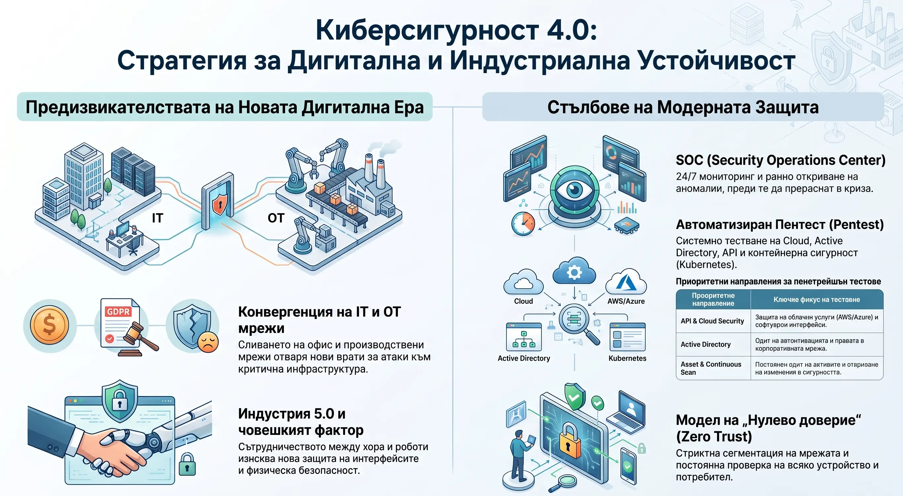

Secure Cloud Architecture
Cloud Security
Защитете облачните си данни, идентичности и workloads с практична оценка на риска, сигурни конфигурации и постоянна видимост.

Сигурна облачна основа
Контрол върху конфигурациите и достъпа
Облачната сигурност е споделена отговорност. Проверяваме как са настроени идентичностите, мрежите, данните и услугите, за да намалим риска от misconfiguration и неоторизиран достъп.
- IAM и least privilegeПреглед на роли, права, MFA и привилегирован достъп.
- Cloud posture assessmentОткриване на рискови настройки и публично експонирани ресурси.
- Защита на даннитеКриптиране, ключове, backup и политики за съхранение.
- Мониторинг и responseИнтеграция на cloud логове и сигнали с NOC/SOC процесите.
AWS, Azure и хибридни среди
Сигурност, която следва архитектурата
Работим с публични облаци, Kubernetes и хибридни среди. Съобразяваме препоръките с начина, по който екипите ви разработват, внедряват и управляват системите.
Често задавани въпроси
Cloud Security
Кои облачни платформи поддържате?
Работим с AWS, Azure, Google Cloud и DigitalOcean, както и с хибридни среди и Kubernetes инфраструктура.
Какво включва cloud security одитът?
Проверяваме идентичности и права, мрежова експозиция, криптиране, логове, backup, конфигурации и ключови cloud security контроли.